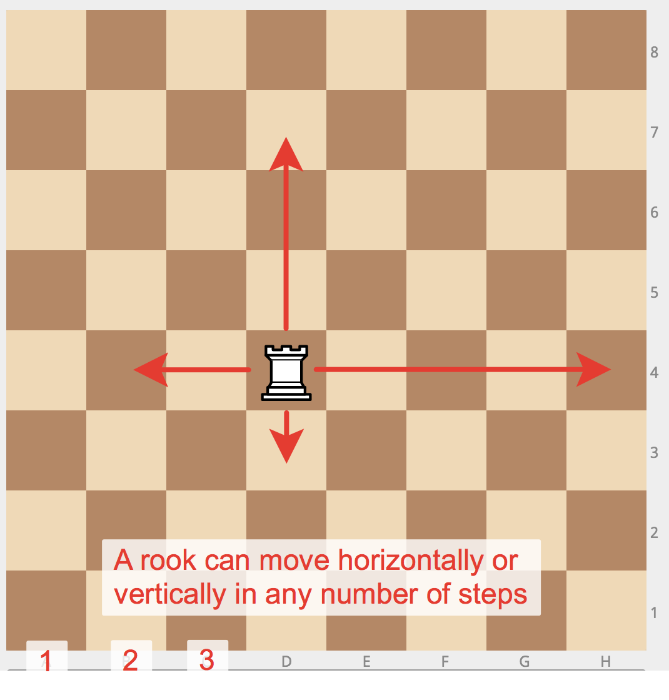
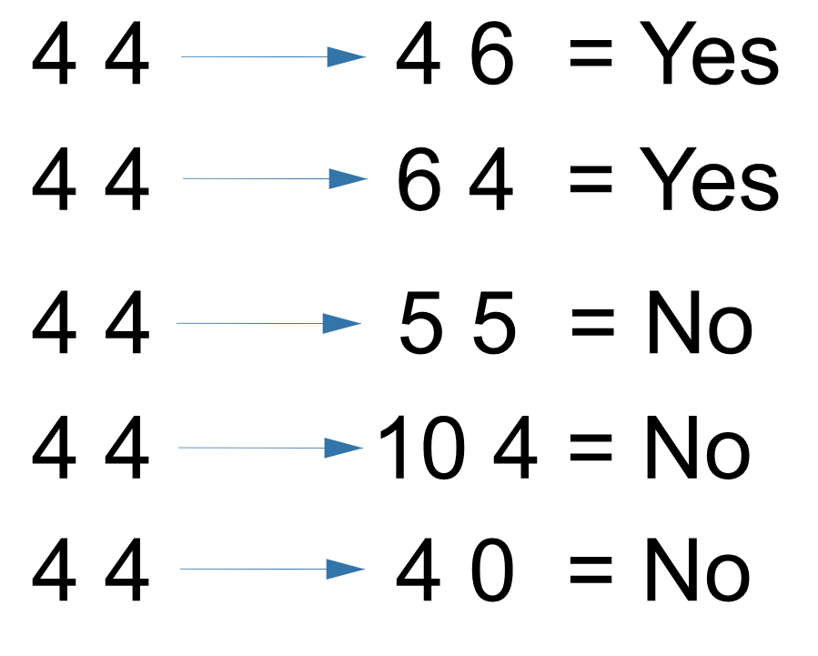

Your challenge is to create a simple program that determines where a rook can move:
- Provide background info - (You need to evaluate if a rook can move to a certain space or if it violates the rules of the game.). For information, rooks can only move vertical or horizontal from the square in which it starts it's turn
The results should then be shown on the screen:
- Ask the user where the rook is starting (x1,y1)
- Ask the user where they want to move the rook (x2, y2)
- Program should respond if the move is valid or not
---------------------------------- Input/Output -----------------------------

-See if you can write a similar pattern for 2 other chess pieces
-Bishop (moves only diagonal)
-Knight (Moves vertical/horizontal 2, then one to the right or left, like an L)